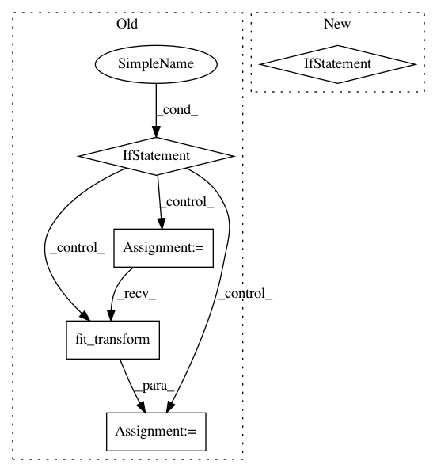

5605cfb777a9319319490c3357be491ddae88213,pynets/graphestimation.py,,get_conn_matrix,#Any#Any#,10
Before Change
print("\nComputing partial correlation matrix...\n")
conn_measure = ConnectivityMeasure(kind="partial correlation")
conn_matrix = conn_measure.fit_transform([time_series])[0]
elif conn_model == "tangent":
// credit: nilearn
print("\nComputing tangent matrix...\n")
conn_measure = ConnectivityMeasure(kind="tangent")
conn_matrix = conn_measure.fit_transform([time_series])[0]
elif conn_model == "cov" or conn_model == "sps":
////Fit estimator to matrix to get sparse matrix
estimator = GraphLassoCV()
try:
After Change
print("\nFetching shrunk precision matrix from covariance estimator...\n")
conn_matrix = -estimator_shrunk.precision_
elif conn_model == "cov":
if estimator_shrunk is None:
print("\nFetching covariance matrix from covariance estimator...\n")
conn_matrix = estimator.covariance_
else:
conn_matrix = estimator_shrunk.covariance_
elif conn_model == "QuicGraphLasso":
from inverse_covariance import QuicGraphLasso
// Compute the sparse inverse covariance via QuicGraphLasso
// credit: skggm
In pattern: SUPERPATTERN
Frequency: 3
Non-data size: 5
Instances
Project Name: dPys/PyNets
Commit Name: 5605cfb777a9319319490c3357be491ddae88213
Time: 2018-06-13
Author: dpisner@utexas.edu
File Name: pynets/graphestimation.py
Class Name:
Method Name: get_conn_matrix
Project Name: automl/ParameterImportance
Commit Name: 4e3de39a18a8d9ad66492afffced84e8e084f4cb
Time: 2017-12-05
Author: biedenka@informatik.uni-freiburg.de
File Name: pimp/evaluator/forward_selection.py
Class Name: ForwardSelector
Method Name: run
Project Name: metric-learn/metric-learn
Commit Name: 85185175f356697f4a91feacaed2d3a9d70af95f
Time: 2019-06-12
Author: 31916524+wdevazelhes@users.noreply.github.com
File Name: metric_learn/rca.py
Class Name: RCA
Method Name: fit